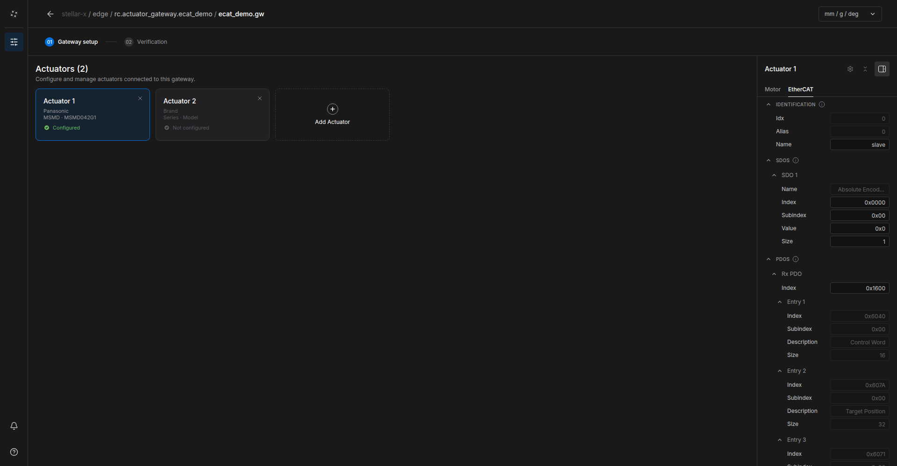
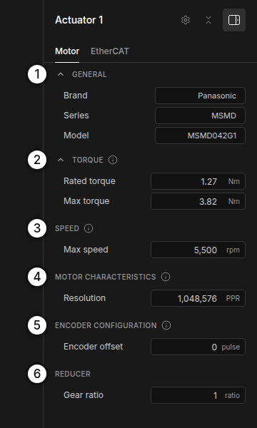
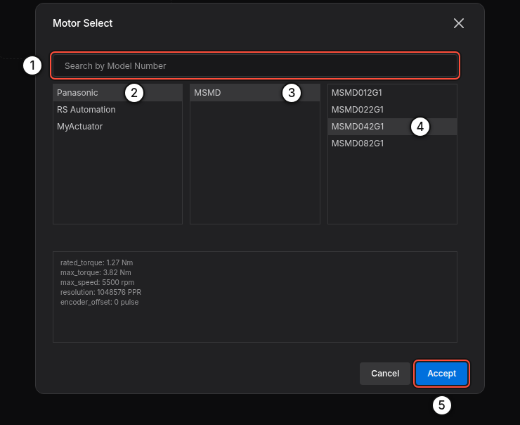
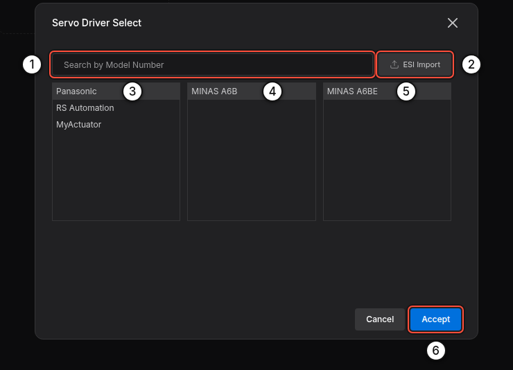
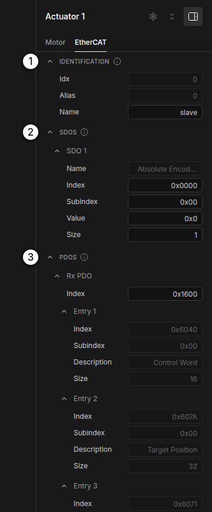
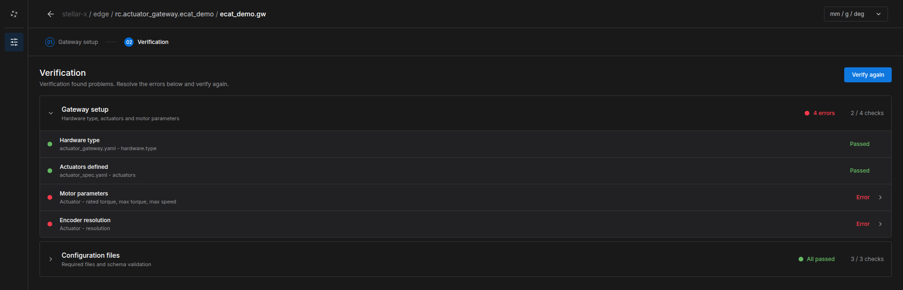

EtherCAT Gateway¶
Stellar X is an EtherCAT master. An actuator gateway of type EtherCAT drives CiA 402 servo drives on the controller's EtherCAT port with distributed-clock synchronization at the gateway's control period (1 ms by default). This page covers wiring, the gateway document, parameters, bring-up and troubleshooting.
For a complete example from wiring to driving, see EtherCAT Mobile Base: four drives on a skid-steer base, with example files.
Real motors move. Bring up a new EtherCAT system with the robot clear of people and obstacles, the drives' safe torque off (STO) and emergency stop wired, and someone at the emergency stop.
1. What You Need¶
| Item | Requirement |
|---|---|
| Drives | EtherCAT servo drives with the CiA 402 profile, supporting cyclic synchronous position (CSP). Mobile bases also need cyclic synchronous velocity (CSV); torque control needs cyclic synchronous torque (CST). |
| Drive data | The drive's ESI file (EtherCAT Slave Information, .xml) from the manufacturer, unless the drive is in the built-in catalog |
| Motor data | Rated and peak torque, maximum speed, encoder resolution, gear ratio |
| Cables | Standard EtherCAT (Ethernet) cables, one per drive |
Built-in catalog: Panasonic MINAS A6BE, RS Automation CSD7, MyActuator RMD-X (EtherCAT) drives, and Panasonic MSMD, RS Automation CSMA/CSMT and MyActuator RMD-X motors.
2. Wire the Drives¶
Connect the drives as a line, starting at Stellar X:
flowchart LR
SX["Stellar X"] --> D1["Drive 1"]
D1 --> D2["Drive 2"]
D2 --> D3["Drive 3"]- Plug Stellar X's EtherCAT Out port into the IN port of the first drive. Connect each drive's OUT port to the next drive's IN port.
- Do not use a network switch. EtherCAT frames must pass through the drives in a line.
- The cable order is the actuator order. The first drive on the cable is actuator 1 (index 0) of the gateway, the second is actuator 2 (index 1), and so on. To change the order, change the wiring.
- Devices after the last controlled drive are allowed; the gateway ignores them.
- The EtherCAT port needs no IP address and is not configured on the Network Settings page.
3. Create the Gateway Document¶
- On the Station, add an Actuator gateway node, for example
arm(Nodes and Connections). - Click Edit Stellar Gateway Designer. In Create gateway definition, choose EtherCAT and click Next › Create (Gateway Designer).
- Click Add Actuator once per drive, in cable order.
- For each actuator, fill in the Motor tab and the EtherCAT tab as described below.
- Open 02 Verification, click Verify and fix any errors.


Motor Tab¶


Click Brand, Series or Model ① to open Motor Select: search by model number, or pick Brand › Series › Model. The preview shows the catalog values, and Accept fills them in. For a motor that is not in the catalog, type the values.


The fields of the Motor tab:
| Section | Field | Unit | Meaning |
|---|---|---|---|
| ② TORQUE | Rated torque | Nm | Continuous motor torque. Torque commands are sent to the drive in per mille of this value. |
| Max torque | Nm | Peak torque of the motor itself, at the motor shaft (the motor's datasheet value, not the torque after the reducer). The gateway limits joint torque to Max torque × Gear ratio. | |
| ③ SPEED | Max speed | rpm | Maximum speed of the motor itself, at the motor shaft (the motor's datasheet value, not the joint speed after the reducer). The joint speed limit is Max speed ÷ Gear ratio. |
| ④ MOTOR CHARACTERISTICS | Resolution | PPR | Encoder pulses (counts) per motor revolution, before the gear, e.g. 1,048,576 (2²⁰) or 8,388,608 (2²³) |
| ⑤ ENCODER CONFIGURATION | Encoder offset | pulses | Absolute encoder zero. Set by origin calibration in Motion Studio; leave 0 for a new robot. |
| ⑥ REDUCER | Gear ratio | – | Motor turns per joint turn |
Rated torque, Max torque and Max speed are the motor's own values at the motor shaft, as in the motor's datasheet, whatever reducer follows it. Do not convert them to the joint side: the gateway applies the Gear ratio itself.
If Gear ratio is exactly 1, the gateway reads the gear ratio configured in the drive itself (object 0x6091). Enter the real ratio when the drive does not hold it.
EtherCAT Tab¶
Click the gear icon in the actuator panel to open Servo Driver Select:


- Pick the drive from the catalog, or click ESI Import ② and choose the drive's ESI
.xml. If the file describes several devices, choose yours; then choose the RxPDO and TxPDO areas to use. - Accept fills in the drive's identification, start-up SDOs and PDO mapping. Values you change later are highlighted; click one to return to the catalog value.


| Section | Field | Meaning |
|---|---|---|
| IDENTIFICATION | Idx | Position of the drive on the cable, from 0 (read-only) |
| Alias | An alias that identifies the device (read-only). The gateway addresses drives by their position on the cable, not by alias. | |
| Name | A label for logs | |
| SDOS | Index, Subindex, Value, Size | Start-up parameters written to the drive before operation. Index, subindex and value are hexadecimal (0x…); size is in bytes. The entry named Absolute Encoder Reset is not written at start-up; Motion Studio's origin calibration uses it. |
| PDOS | Rx PDO / Tx PDO index | The PDO mapping objects, typically 0x1600 and 0x1A00 |
| Entries | The objects exchanged every cycle (see below). Init Value sets a constant for extra RxPDO entries. |
Process Data¶
The gateway uses these CiA 402 objects:
| Direction | Object | Name | Required |
|---|---|---|---|
| RxPDO (to drive) | 0x6040 | Controlword | Yes |
| 0x607A | Target position | For position control | |
| 0x60FF | Target velocity | For velocity control (mobile bases) | |
| 0x6071 | Target torque | For torque control | |
| 0x60B2 | Torque offset | Optional (feed-forward) | |
| 0x6060 | Modes of operation | Optional (also written by SDO) | |
| TxPDO (from drive) | 0x6041 | Statusword | Yes |
| 0x6064 | Position actual value | Yes | |
| 0x606C | Velocity actual value | Recommended | |
| 0x6077 | Torque actual value | Recommended | |
| 0x6061 | Modes of operation display | Recommended | |
| 0x603F | Error code | Recommended (fault messages) |
You do not choose the mode of operation. The controller selects it per command: position commands use CSP (8), velocity commands CSV (9), torque and impedance commands CST (10).
Verify¶
Open 02 Verification and click Verify. Open a check marked Error to see which actuator and which value to fix, then click Verify again.


A Strider (mobile base) drives its wheels in velocity mode. If the drive's RxPDO has no Target velocity (0x60FF), the wheels do not move and the gateway reports it. Choose a PDO mapping that includes 0x60FF.
4. Connect a Controller¶
- Add the controller node (Motion Studio, Strider or Articulation) and import its document. The document must name this gateway and its actuator indices (Design Documents).
- Connect the controller's
servo_linkto the gateway'sservo_link.
5. Bring Up the System¶
- Power the drives. Release the emergency stop and STO.
-
Select the gateway and click Start node. Watch LOGS › Gateway events:
-
Optional: before you start a controller, click Test Stellar Gateway in the gateway's CONTROL section to open the test console and move single actuators (EtherCAT Mobile Base › Step 5).
- Start the controller node, open its UI and switch Servo On. Jog slowly first and check each joint's direction.
Tip: Bring up one drive first. When it reaches EtherCAT ready and moves correctly, add the next drive to the cable and to the document.
6. Troubleshooting¶
The gateway explains every problem in Gateway events, followed by a hint. The most common messages:
| Message | Cause and fix |
|---|---|
| EtherCAT: no cable link on network port … | No Ethernet link. Plug the cable into Stellar X's EtherCAT Out port and into the first drive's IN port, and power the drive. |
| EtherCAT: no drive answered on network port … | The cable goes to the wrong port of the drive (OUT instead of IN), to a switch, or the drive has no power. |
| EtherCAT: found M of the N drives this gateway controls. | The chain ends after drive M. Check the cable from drive M's OUT port to the next drive's IN port, and that drive's power. |
| …configuration describes K drive(s), but the gateway controls N. | The drive list in the document does not match the actuators. Fix it in the Gateway Designer. |
| Drive … exchanges x/y bits of process data …, the project describes … | The PDO mapping in the document does not match the drive. Re-select the drive or re-import its ESI file. |
| Drive … did not reach SAFE-OP / OP … | The drive refused the configuration or the synchronization. The AL status in the message names the reason (sync, watchdog, PDO or cycle time). |
| Drive … gets velocity commands, but Target Velocity (0x60FF) is not in its … | Add 0x60FF to the RxPDO (see Process Data). |
| Servo ON failed: drive … did not enable (it stays in 'switch on disabled'). | The drive refuses to switch on: check its STO and enable inputs, the emergency stop and its main power. |
| Drive … fault: … (error code 0x….) | A drive alarm, such as overcurrent, voltage, temperature, encoder or following error. Read the alarm on the drive and look it up in its manual, then Error Reset / Fault Reset in the controller UI. |
| EtherCAT communication lost: the drives stopped answering. | A cable was unplugged or a drive lost power. The message names the segment; fix it and restart the gateway. |
| No commands from the robot controller for 3.0 s: servo turned OFF for safety. | The controller stopped or lost its connection. Start the controller and switch the servo on again. |
Problems that are not in the gateway's log (such as a joint moving in the wrong direction or the wrong distance) come from the documents: check the actuator order (cable order), Gear ratio, Resolution, and the joint mapping in the controller's document.